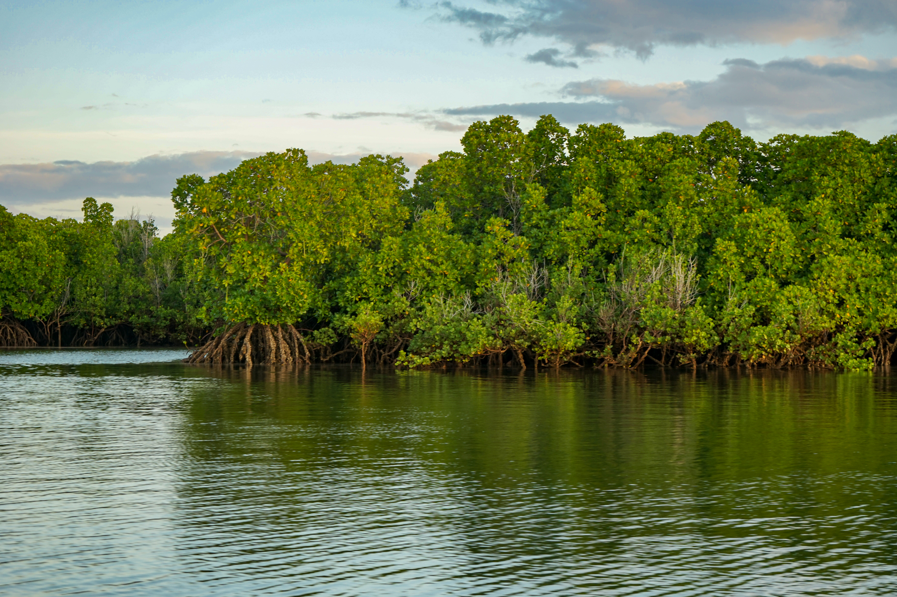
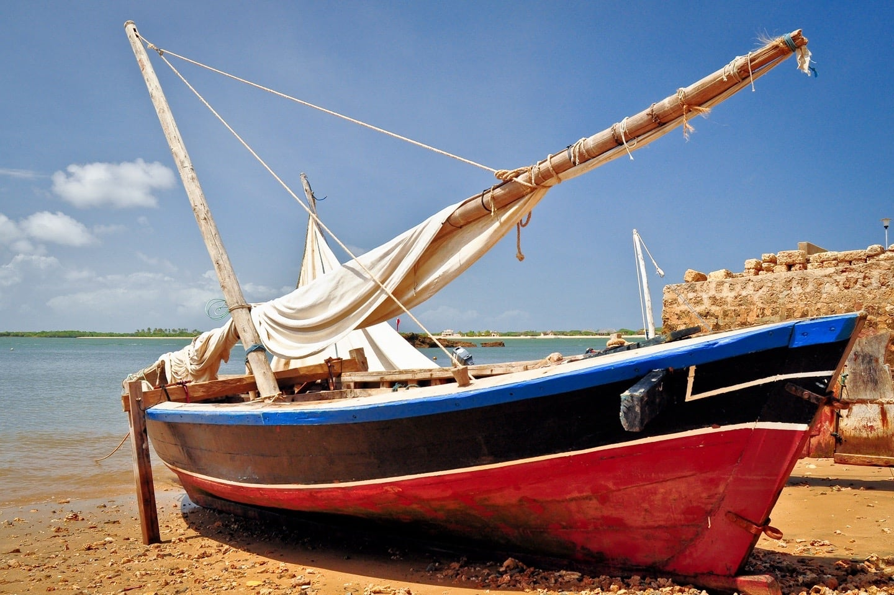
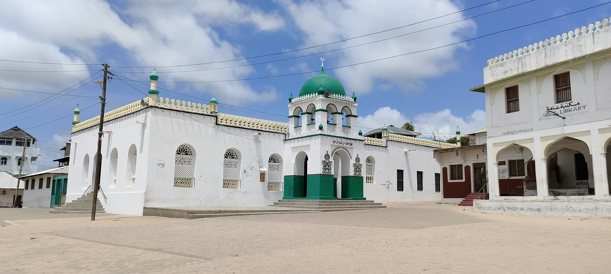
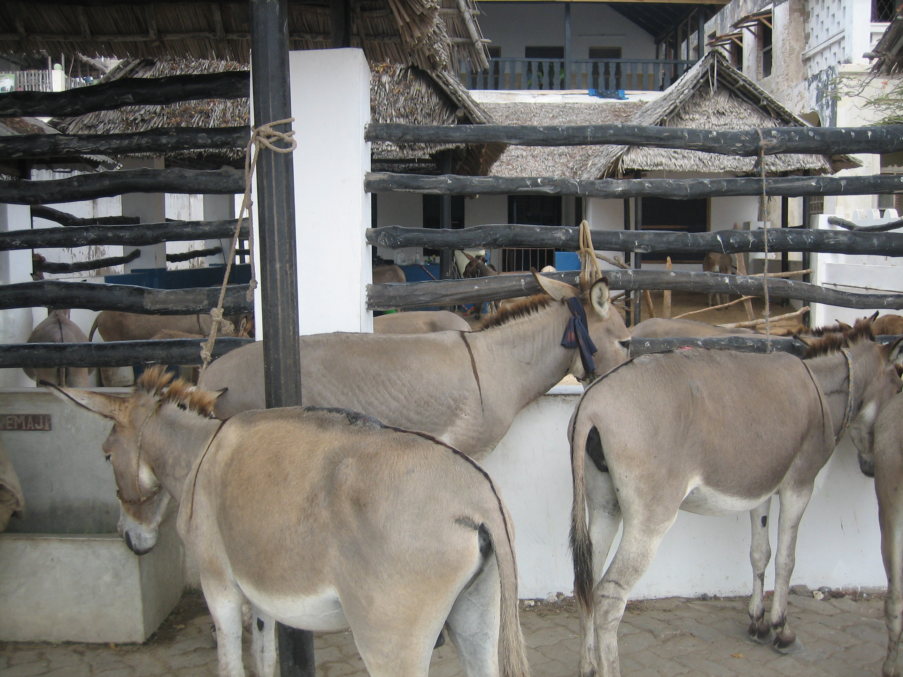

About Lamu

Lamu is a small island located off the coast of Kenya, known for its rich history, stunning architecture, and vibrant culture. It is the oldest and best-preserved Swahili settlement in East Africa and was declared a UNESCO World Heritage Site in 2001.
Lamu life is relaxed and slow-paced, with locals and visitors moving on foot, donkeys, and boats instead of cars. This slow rhythm is part of the island’s charm and invites guests to savor every moment.
History
Lamu has been inhabited for centuries and grew into one of the most important Swahili settlements on the East African coast. Its position along the Indian Ocean connected the island to merchants and travelers from Arabia, Persia, India, and the African mainland.
By the 14th century, Lamu had become a lively trading port. Dhows carried spices, timber, ivory, textiles, and other goods between coastal towns and distant ports. This exchange shaped the island's language, architecture, food, faith, and traditions, creating the distinctive Swahili culture that visitors experience today.
Lamu Old Town's coral-stone buildings, carved wooden doors, narrow streets, mosques, and courtyards preserve this maritime history. The town was recognized as a UNESCO World Heritage Site in 2001 because it is the oldest and best-preserved Swahili settlement in East Africa. Today, the island continues to protect its heritage while welcoming travelers to experience its living culture, beaches, and peaceful rhythm.
Culture
The island is home to a unique blend of cultures, with influences from Arab, African, and Indian traditions. The local Swahili language and Islamic architecture are prominent features, and the experience here is a woven tapestry of Swahili culture, where community life, traditional crafts, and cuisine come together.
Attractions

Lamu Old Town
Narrow streets, coral stone buildings, and historic mosques create an atmospheric walk through centuries of Swahili heritage. The architecture is a living museum of East African history.

Beaches
Pristine white sand beaches perfect for relaxation, swimming, and water sports. The clear turquoise waters of the Indian Ocean offer a tropical paradise experience.

Museums & Cultural Sites
Learn about the island's rich history and culture through museums and traditional sites. Discover the stories of Swahili traders and the Islamic heritage of the island.

Donkey Sanctuary
Meet and interact with the famous Lamu donkeys that are central to island life. The sanctuary cares for these beloved animals that have served the community for generations.

Local Transport & Living
Experience life by walking, riding donkeys, and traveling by boat. This unique way of life has remained virtually unchanged for centuries, offering an authentic glimpse into Swahili culture.
Visit Lamu to experience a piece of living history and immerse yourself in its timeless charm.